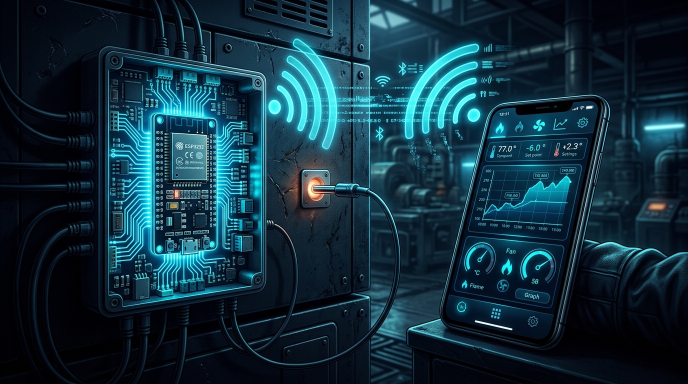
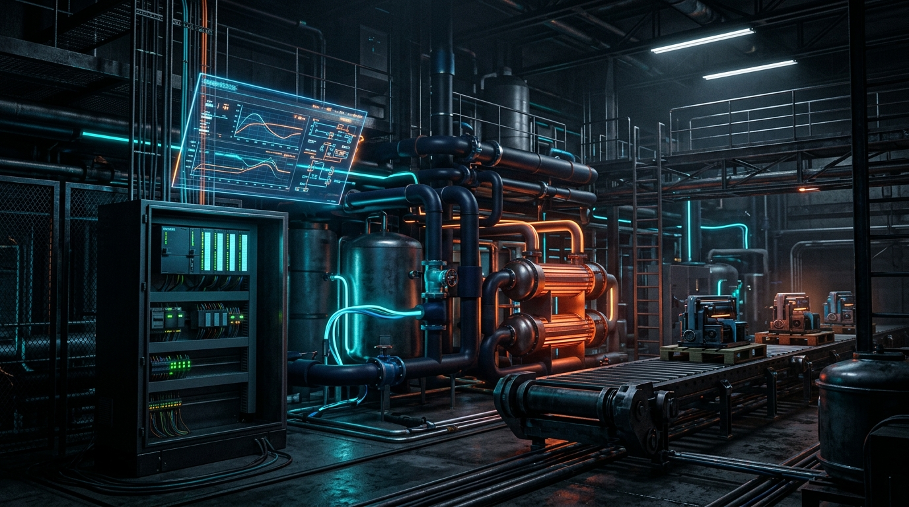
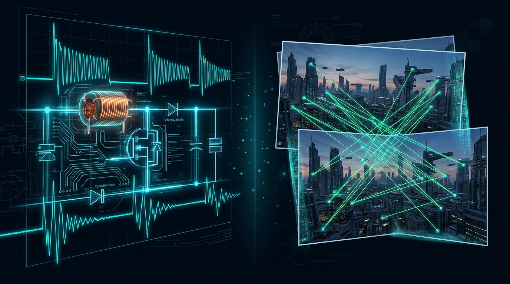
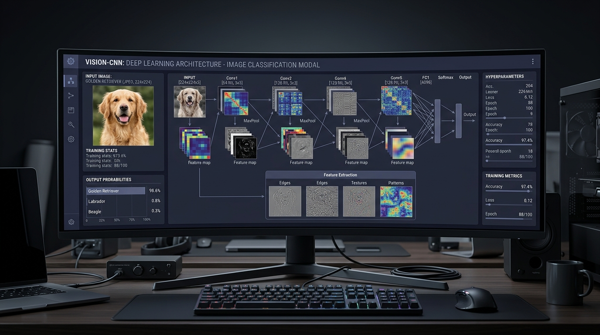
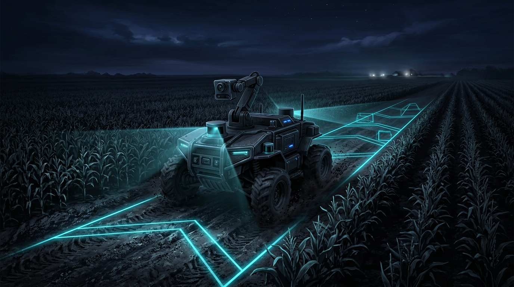
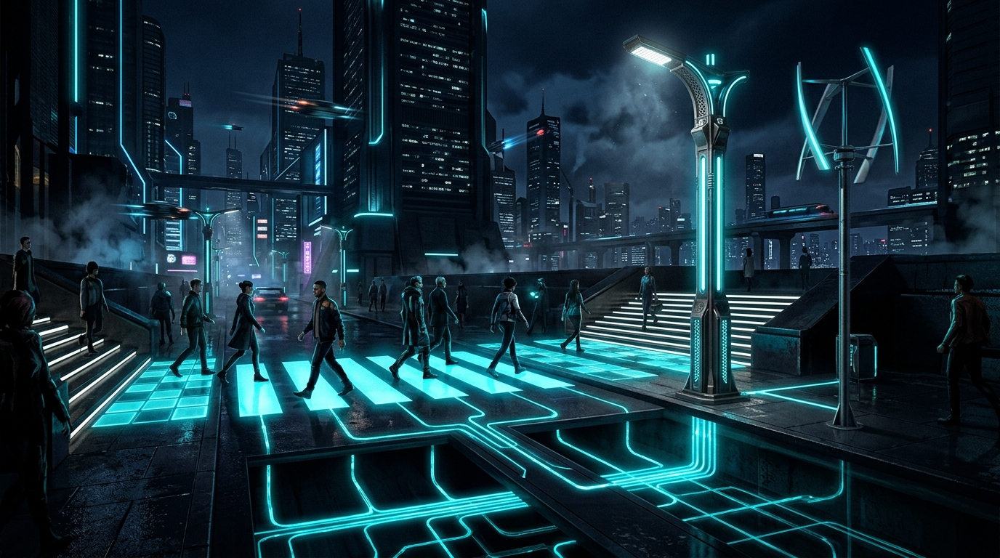

Yazılım Dilleri
PythonCC++React
NativeMATLAB
Elektrik-Elektronik Mühendisi · Bilgisayar Müh. (ÇAP) · Yüksek Lisans
Donanım ile yazılımın kesiştiği alanda; gömülü sistemler (ESP32), endüstriyel otomasyon (PLC & SCADA), bilgisayarlı görü (OpenCV) ve enerji hasadı üzerine çalışıyorum. Rize-Artvin Havalimanı ve İl Özel İdaresi'ndeki saha tecrübelerimi akademik vizyonumla birleştiriyorum.
2002 Artvin doğumluyum. Bandırma Onyedi Eylül Üniversitesi Elektrik-Elektronik Mühendisliği'nden mezun oldum; aynı üniversitede Bilgisayar Mühendisliği Çift Anadal (ÇAP) programına devam ediyorum. Şu anda Sakarya Üniversitesi'nde Elektrik Mühendisliği yüksek lisans öğrencisiyim.
Gömülü sistemler, endüstriyel otomasyon (SCADA, PLC), bilgisayarlı görü, otonom araçlar ve enerji hasadı alanlarında aktif olarak çalışıyorum. Ödüllü projelerde takım kaptanlığı yaptım.
Rize-Artvin Havalimanı'nda SCADA ve elektrik altyapısı, Artvin İl Özel İdaresi'nde ise teknik çizim ve kamu binalarının elektrik sistemlerinin denetimi üzerine yaptığım stajlarla saha tecrübesi edindim. Bu tecrübeyi akademik vizyonla birleştirerek donanım ve yazılımda yenilikçi çözümler üretmeyi amaçlıyorum.
Rize-Artvin Havalimanı
SCADA sistemleri, PAPI (Hassas Yaklaşma Yörünge Belirleyici) ve YG/AG elektrik altyapısının operasyonel süreçlerinde görev aldım. Elektrik motorlarının periyodik ve kestirimci bakım planlamasına, iş emirlerinin oluşturulmasına, yedek parça yönetimine ve enerji sürekliliğini artırma çalışmalarına destek verdim.
Artvin İl Özel İdaresi
AutoCAD üzerinden teknik çizimler gerçekleştirdim. Çeşitli devlet kurumlarının yangın alarm sistemleri, kamera altyapıları ve elektrik sistemlerinin denetleme süreçlerinde aktif olarak görev aldım.
Milli Teknoloji Akademisi
Yapay zekâ, çip tasarımı ve otonom sürüş teknolojileri alanlarında uzmanlık eğitimi almak üzere, Türkiye'nin önde gelen teknoloji şirketlerinin desteklediği programa seçildim.
IEEE BANÜ
Öğrenci topluluğunda birçok pozisyonda yer alarak Akıllı Ev Sistemleri ve Tarımsal Kara Aracı gibi projelerde görev yaptım.
Sakarya Üniversitesi
Bandırma Onyedi Eylül Üniversitesi
GNO 2.61 / 4.00Bandırma Onyedi Eylül Üniversitesi
GNO 3.35 / 4.00 MezunGömülü sistemlerden otomasyona, bilgisayarlı görü ve yapay zekâdan güç elektroniğine uzanan çalışmalarım.

IoT & Donanım Bitirme TeziIoT tabanlı modüler fırın kontrol ünitesi. ESP32 mikrodenetleyici mimarisi, GLCD ekran, PT100 sıcaklık sensörü ve röle programlaması. MQTT protokolü üzerinden React Native mobil uygulama ile uzaktan gerçek zamanlı telemetri izleme ve güvenli kontrol.

Endüstriyel OtomasyonSiemens TIA Portal v18 ile programlanan S7-1200 PLC'nin, Factory I/O ortamında 3 boyutlu modellenen ısıtma-soğutma konveyör hattını kontrol ettiği, S7-PLCSIM entegrasyonlu gerçeğe yakın endüstriyel otomasyon senaryosu.
MediaPipe yüz işaret noktaları (Face Mesh) algoritması ile kullanıcının baş pozisyonunu ve bakış açısını web kamera üzerinden gerçek zamanlı takip ederek ekranda paralaks etkili, doğal derinlik hissi veren dinamik 3D simülasyon ortamı.

Güç ElektroniğiGüç elektroniği sistemleri için MATLAB/Simulink ortamında modellenen DC-DC yükseltici (Boost) konvertör devresi. Yüksek verimli PWM anahtarlama analizi, endüktans/kapasitans optimizasyonu ve kapalı çevrim gerilim regülasyon simülasyonu.

Derin Öğrenme & AIEvrişimli Sinir Ağları (CNN) mimarisiyle geliştirilen kedi-köpek ve görsel veri sınıflandırma modeli. Konvolüsyon katmanları, MaxPool, Dropout ve veri artırma (data augmentation) ile aşırı öğrenme (overfitting) engellenerek yüksek doğruluk oranı elde edildi.
Farklı açılardan çekilen fotoğraflardan ORB öznitelik çıkarımı, RANSAC eşleştirme algoritması ve homografi matrisi yöntemleriyle perspektif bozulması olmadan kusursuz panoramik görüntüler oluşturan ileri seviye görüntü işleme algoritması.

Otonom Sistemler Takım KaptanıTarımsal arazilerde otonom seyrüsefer ve veri toplama amacıyla geliştirilen İKA projesinde takım kaptanlığı ve gömülü yazılım mimarisi sorumluluğu üstlendim. (TİKA kategorisinin yarışmadan kaldırılmasıyla proje rafa kaldırılmıştır.)

Yenilenebilir Enerji Ödüllü Ar-GeGMKA Fikri Maratonu 3.'lüğü ve GSÜ Yeni Girişimcilik Finalistliği kazanan; yaya trafiği ve mekanik titreşimlerden enerji hasat ederek sokak aydınlatmalarını ve mama otomatlarını şebekeden bağımsız besleyen yenilikçi sürdürülebilir enerji sistemi.
GitHub profilime yüklenmeye hazır tüm mühendislik projelerim. Soldaki listeden dilediğiniz projeyi seçerek kaynak kodlarını inceleyebilir, panoya kopyalayabilir veya terminal komutlarıyla doğrudan GitHub reponuza yükleyebilirsiniz.
Her sayfada bir mühendislik terimi: günlük dille açıklaması, formülü ve gerçek hayatta ne işe yaradığı. Sağa kaydırarak ilerle.
← Kaydır, sürükle veya ok tuşlarını kullan →
Milli Teknoloji Akademisi uzmanlık programı, BTK Akademi belgeleri, profesyonel sertifikasyonlar ve yarışma derecelerim.
GMKA – Güney Marmara Kalkınma Ajansı
Ekip olarak geliştirdiğimiz Stepergy projesini jüriye sunarak 3.'lük derecesi elde ettik.
Ödül Belgesini GörüntüleGalatasaray Üniversitesi
Yaya trafiğinden mekanik enerji hasadı yaparak dış aydınlatma sistemlerini şebekeden bağımsız hale getirmeyi amaçlayan Stepergy projemizle finalist olduk.
Bilişim Vadisi
Sokak hayvanları mama otomatlarının enerji ihtiyacını dikey jeneratörlerle karşılamayı hedefleyen projemizle uluslararası yarışmada yarı finalist olduk.
Milli Teknoloji Akademisi · T3 Vakfı
Uzmanlık BelgesiBTK Akademi
Yapay ZekâBTK Akademi
AlgoritmalarSertifika Programı
Veri BilimiTurkcell Geleceği Yazanlar
OtomasyonBTK Akademi
DonanımBTK Akademi
GüvenlikCBS / GIS Sertifikası
GIS & HaritaUI/UX Sertifika Programı
UI / UXBTK Akademi
DilBTK Akademi
Dilİletişim & Liderlik
Soft SkillProfesyonel Gelişim
İletişimKariyer Yönetimi
KariyerFinansal Okuryazarlık
FinansDijital Ticaret
E-TicaretOyun Geliştirme & Pazarlama
OyunBandırma Onyedi Eylül Üniversitesi
AkademikGüney Marmara Kalkınma Ajansı
Derece BelgesiProje fikirleri, akademik iş birlikleri veya profesyonel sorularınız için doğrudan bana ulaşabilirsiniz.